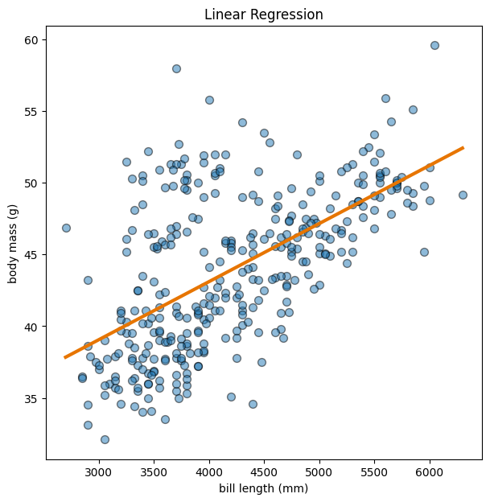
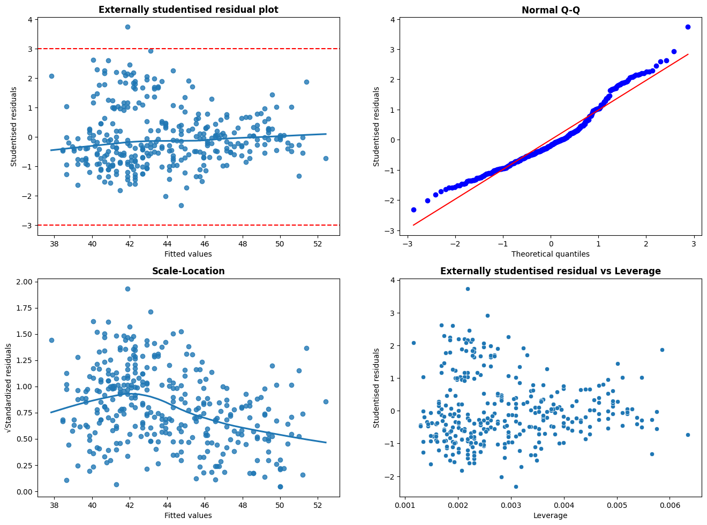
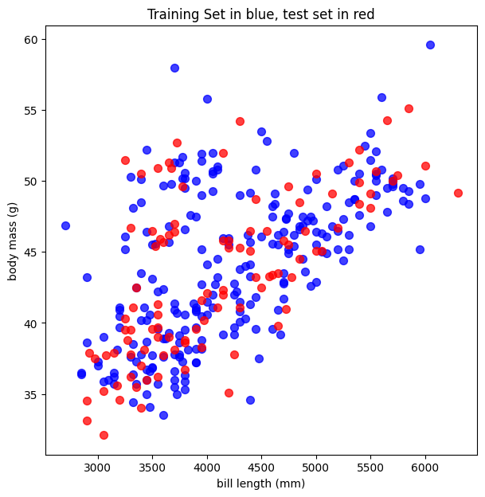
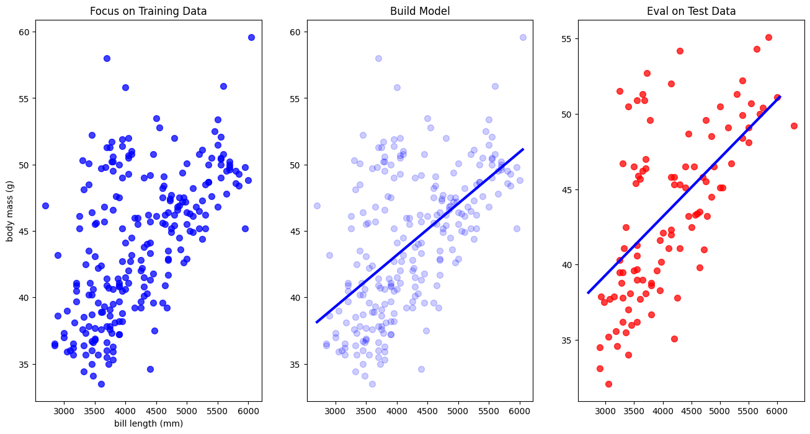

# install packages (if need be)
# %pip install palmerpenguinsSML 301
Session 2: Linear Regression
- linear regression
- model diagnostics
- train-test split
- polynomial regression
- multilinear regression
- penalization
Remember to “Save Copy to Drive” to use your own cloud space.
# load libraries
import matplotlib.pyplot as plt
import numpy as np
import pandas as pd
import seaborn as sns
from palmerpenguins import load_penguins
from scipy import stats
from sklearn import linear_model
from sklearn.linear_model import LinearRegression, RidgeCV, LassoCV, ElasticNetCV
from sklearn.metrics import mean_squared_error
from sklearn.model_selection import train_test_split, GridSearchCV
from sklearn.preprocessing import PolynomialFeatures
# Princeton colors
# orange on white: #e77500
# orange on black: #f58025
# load data
penguins = load_penguins()
penguins.head()| species | island | bill_length_mm | bill_depth_mm | flipper_length_mm | body_mass_g | sex | year | |
|---|---|---|---|---|---|---|---|---|
| 0 | Adelie | Torgersen | 39.1 | 18.7 | 181.0 | 3750.0 | male | 2007 |
| 1 | Adelie | Torgersen | 39.5 | 17.4 | 186.0 | 3800.0 | female | 2007 |
| 2 | Adelie | Torgersen | 40.3 | 18.0 | 195.0 | 3250.0 | female | 2007 |
| 3 | Adelie | Torgersen | NaN | NaN | NaN | NaN | NaN | 2007 |
| 4 | Adelie | Torgersen | 36.7 | 19.3 | 193.0 | 3450.0 | female | 2007 |
Matplotlib: Axes over plt.plot()
In general, the axes interface in matplotlib offers more customization over data visuals than the plt.plot() interface. In this course, I proceed with the axes interface.
Scatterplot
A scatterplot shows two numerical variables, and we then add code to plot a best-fit line for linear regression.
In this first example, we try to predict a penguin’s bill length based on its body mass.
penguins_subset = penguins[["bill_length_mm", "body_mass_g"]] #subset with just the variables that we need
penguins_subset = penguins_subset.dropna() #then remove missing data
X = penguins_subset["body_mass_g"]
y = penguins_subset["bill_length_mm"]# https://python-graph-gallery.com/scatterplot-with-regression-fit-in-matplotlib/
# # Initialize layout
fig, ax = plt.subplots(figsize=(7, 7))
# Add scatterplot
ax.scatter(X, y, s=50, alpha=0.5, edgecolors="#000000")
# Add best-fit line
b, a = np.polyfit(X, y, deg = 1)
xseq = np.linspace(min(X), max(X), num = 301)
ax.plot(xseq, a + b*xseq, color = "#e77500", lw = 3)
# Label plot
ax.set_title("Linear Regression")
ax.set_xlabel("bill length (mm)")
ax.set_ylabel("body mass (g)")Text(0, 0.5, 'body mass (g)')
penguins_subset = penguins[["bill_length_mm", "body_mass_g"]] #subset with just the variables that we need
penguins_subset = penguins_subset.dropna() #then remove missing data
X = penguins_subset[["body_mass_g"]] #later: needs to be a 2D array
y = penguins_subset["bill_length_mm"]
# linear regression modeling (via scikit-learn)
model = LinearRegression().fit(X, y)Linear regression math model:
\(y = \beta_{0} + \beta_{1}X_{1}\)
# show model coefficients
print("beta_0:", model.intercept_)
print("beta_1:", model.coef_)beta_0: 26.898872423598547
beta_1: [0.00405142]Model Diagnositics
Following discussion in the ISLP textbook, we proceed to perform some diagnostics on the linear regression process.
# helper functions by a-martyn (https://github.com/a-martyn)
def lm_stats(X, y, y_pred):
""" LEVERAGE & STUDENTISED RESIDUALS
- https://en.wikipedia.org/wiki/Studentized_residual#How_to_studentize
"""
# Responses as np array vector
try:
y.shape[1] == 1
# take first dimension as vector
y = y.iloc[:,0]
except:
pass
y = np.array(y)
# Residuals
residuals = np.array(y - y_pred)
# Hat matrix
H = np.array(X @ np.linalg.inv(X.T @ X)) @ X.T
# Leverage
#h_ii = H.diagonal()
h_ii = np.diag(H)
## Externally studentised residual
# In this case external studentisation is most appropriate
# because we are looking for outliers.
# Estimate variance (externalised)
σi_est = []
for i in range(X.shape[0]):
# exclude ith observation from estimation of variance
external_residuals = np.delete(residuals, i)
σi_est += [np.sqrt((1 / (X.shape[0] - X.shape[1] - 1)) * np.sum(np.square(external_residuals)))]
σi_est = np.array(σi_est)
# Externally studentised residuals
t = residuals / σi_est * np.sqrt(1 - h_ii)
# Return dataframe
return pd.DataFrame({'residual': residuals,
'leverage': h_ii,
'studentised_residual': t,
'y_pred': y_pred})
def lm_plot(lm_stats_df):
"""Provides R style residual plots based on results from lm_stat()"""
# Parse stats
t = lm_stats_df['studentised_residual']
h_ii = lm_stats_df['leverage']
y_pred = lm_stats_df['y_pred']
# setup axis for grid
plt.figure(1, figsize=(16, 18))
# Studentised residual plot
plt.subplot(321)
ax = sns.regplot(x=y_pred, y=t, lowess=True)
plt.xlabel('Fitted values')
plt.ylabel('Studentised residuals')
plt.title('Externally studentised residual plot', fontweight='bold')
# Draw Hastie and Tibshirani's bounds for possible outliers
ax.axhline(y=3, color='r', linestyle='dashed')
ax.axhline(y=-3, color='r', linestyle='dashed');
# Normal Q-Q plot
plt.subplot(322)
ax = stats.probplot(t, dist='norm', plot=plt)
plt.ylabel('Studentised residuals')
plt.title('Normal Q-Q', fontweight='bold')
# Standardised residuals
plt.subplot(323)
ax = sns.regplot(x=y_pred, y=np.sqrt(np.abs(t)), lowess=True)
plt.xlabel('Fitted values')
plt.ylabel('√Standardized residuals')
plt.title('Scale-Location', fontweight='bold')
# Residuals vs Leverage plot
plt.subplot(324)
ax = sns.scatterplot(x=h_ii, y=t)
plt.xlabel('Leverage')
plt.ylabel('Studentised residuals')
plt.title('Externally studentised residual vs Leverage', fontweight='bold');# produce predictions
y_pred = model.predict(X)
# Analyse residuals
lm_plot(lm_stats(X, y, y_pred))
plt.show()
Train-Test Split
Moving toward model evaluation, we should get in the habit of partitioning our data into a training set and test set
X = penguins_subset[["body_mass_g"]]
y = penguins_subset["bill_length_mm"]
X_train, X_test, y_train, y_test = train_test_split(X, y, test_size = 0.3, random_state = 301)# Initialize layout
fig, ax = plt.subplots(figsize=(7, 7))
# Add scatterplot
ax.scatter(X_train, y_train, s=50, alpha=0.75, color = "blue")
ax.scatter(X_test, y_test, s=50, alpha=0.75, color = "red")
# Label plot
ax.set_title("Training Set in blue, test set in red")
ax.set_xlabel("bill length (mm)")
ax.set_ylabel("body mass (g)")Text(0, 0.5, 'body mass (g)')
# Initialize subplot layout
fig, (ax1, ax2, ax3) = plt.subplots(1, 3, figsize=(16, 8))
ax1.scatter(X_train, y_train, s=50, alpha=0.75, color = "blue")
ax1.set_title("Focus on Training Data")
ax1.set_xlabel("bill length (mm)")
ax1.set_ylabel("body mass (g)")
ax2.scatter(X_train, y_train, s=50, alpha=0.2, color = "blue")
ax2.set_title("Build Model")
b, a = np.polyfit(X_train["body_mass_g"], y_train, deg = 1)
xseq = np.linspace(min(X_train["body_mass_g"]), max(X_train["body_mass_g"]), num = 301)
ax2.plot(xseq, a + b*xseq, color = "blue", lw = 3)
ax3.scatter(X_test, y_test, s=50, alpha=0.75, color = "red")
ax3.set_title("Eval on Test Data")
ax3.plot(xseq, a + b*xseq, color = "blue", lw = 3)
model = LinearRegression().fit(X_train, y_train)We then evaluate the model on the test data. For regression tasks, a common metric is MSE (mean-squared error)
\(\text{MSE} = \frac{1}{n}\sum_{i=1}^{n}(\hat{y}_{i} - y_{i})^{2}\)
y_pred = model.predict(X_test)
model_MSE = mean_squared_error(y_test, y_pred)
print(f'test MSE: {model_MSE:.4f}')test MSE: 18.4755Polynomial Regression
\(\hat{y} = \beta_{0} + \beta_{1}X_{1} + \beta_{2}X_{1}^{2}\)
\(\hat{y} = \beta_{0} + \beta_{1}X_{1} + \beta_{2}X_{1}^{2} + \beta_{3}X_{1}^{3}\)
# degree 2 polynomial
poly_setup = PolynomialFeatures(degree = 2, include_bias = False).fit_transform(X_train)
model = LinearRegression().fit(poly_setup, y_train)
# show model coefficients
print("beta_0:", model.intercept_)
print("betas:", model.coef_)
poly_setup = PolynomialFeatures(degree = 2, include_bias = False).fit_transform(X_test)
y_pred = model.predict(poly_setup)
model_MSE = mean_squared_error(y_test, y_pred)
print(f'test MSE: {model_MSE:.4f}')beta_0: 29.04071872919326
betas: [3.23458158e-03 7.28637330e-08]
test MSE: 18.5154# degree 3 polynomial
poly_setup = PolynomialFeatures(degree = 3, include_bias = False).fit_transform(X_train)
model = LinearRegression().fit(poly_setup, y_train)
# show model coefficients
print("beta_0:", model.intercept_)
print("betas:", model.coef_)
poly_setup = PolynomialFeatures(degree = 3, include_bias = False).fit_transform(X_test)
y_pred = model.predict(poly_setup)
model_MSE = mean_squared_error(y_test, y_pred)
print(f'test MSE: {model_MSE:.4f}')beta_0: 13.201870201004642
betas: [ 1.45591024e-02 -2.56467337e-06 2.00152243e-10]
test MSE: 18.3806Multilinear Regression
\(\hat{y} = \beta_{0} + \beta_{1}X_{1} + \beta_{2}X_{2}\)
penguins_subset = penguins[["bill_length_mm", "body_mass_g", "flipper_length_mm"]] #subset with just the variables that we need
penguins_subset = penguins_subset.dropna() #then remove missing data
X = penguins_subset[["body_mass_g", "flipper_length_mm"]]
y = penguins_subset["bill_length_mm"]
X_train, X_test, y_train, y_test = train_test_split(X, y, test_size = 0.3, random_state = 301)
model = LinearRegression().fit(X_train, y_train)
# show model coefficients
print("beta_0:", model.intercept_)
print("betas:", model.coef_)
y_pred = model.predict(X_test)
model_MSE = mean_squared_error(y_test, y_pred)
print(f'test MSE: {model_MSE:.4f}')beta_0: -3.512948966423032
betas: [0.00042458 0.22721905]
test MSE: 16.4660Penalization
Later, we will discuss the notion of variance (in the test set error totals) for machine learning. For now, we try out penalization methods to suppress some of the coefficients to try to reduce variance.
Ridge Regression
\(\hat{y} = \beta_{0} + \beta_{1}X_{1} + \beta_{2}X_{2} + \alpha\sum_{i = 1}^{2} \beta_{i}^{2}\)
where \(\alpha > 0\) is the penalization coefficient.
- ridge regression is also called L2 penalization
ridge_grid = RidgeCV(alphas = [0.001, 0.01, 0.1, 1.0, 10.0, 100, 1000])
model = ridge_grid.fit(X_train, y_train)
# show model coefficients
print("alpha:", model.alpha_)
print("beta_0:", model.intercept_)
print("betas:", model.coef_)
y_pred = model.predict(X_test)
model_MSE = mean_squared_error(y_test, y_pred)
print(f'test MSE: {model_MSE:.4f}')alpha: 100.0
beta_0: -3.244404996952511
betas: [0.0004543 0.22526271]
test MSE: 16.4630LASSO Regression
\(\hat{y} = \beta_{0} + \beta_{1}X_{1} + \beta_{2}X_{2} + \alpha\sum_{i = 1}^{2} |\beta_{i}|\)
where \(\alpha > 0\) is the penalization coefficient.
- LASSO regression (least absolute shrinkage and selection operator) is also called L1 penalization
lasso_grid = LassoCV(alphas = [0.001, 0.01, 0.1, 1.0, 10.0, 100, 1000])
model = lasso_grid.fit(X_train, y_train)
# show model coefficients
print("alpha:", model.alpha_)
print("beta_0:", model.intercept_)
print("betas:", model.coef_)
y_pred = model.predict(X_test)
model_MSE = mean_squared_error(y_test, y_pred)
print(f'test MSE: {model_MSE:.4f}')alpha: 0.1
beta_0: -3.225590182288883
betas: [0.00045654 0.22512234]
test MSE: 16.4627Preview: Grid Search
- we can try out several values of \(\alpha\)
- we can try out different penalization methods
The following code outlines the idea. We create a Python dictionary of the hyperparameter values that we wish to explore, and run cross-validation on all of the proposed models.
#linear_models = linear_model.LinearRegression()
#alpha_space = np.logspace(-4, 4, 10)
#penalty = ["l1", "l2"]
#options = dict(alpha_space = alpha_space, penalty = penalty)
#grid_search = GridSearchCV(linear_models, options, cv = 5, verbose = 0)
#model = grid_search.fit(X_train, y_train)For these penalized linear models, we proceed instead to elastic net, which is a linear combination of the previous ridge and LASSO ideas.
\(\hat{y} = \beta_{0} + \beta_{1}X_{1} + \beta_{2}X_{2} + \alpha[L\sum_{i = 1}^{2} \beta_{i}^{2}+ (1-L)\sum_{i = 1}^{2} |\beta_{i}|]\)
- \(\alpha\): penalization coefficient
- \(L\): \(L1\) ratio
elastic_net_cv_model = ElasticNetCV(alphas = np.logspace(-4, 4, 10), l1_ratio = np.logspace(-1, 1, 10), cv = 5, random_state = 301)
model = elastic_net_cv_model.fit(X_train, y_train)
# show model coefficients
print(f"Optimal alpha: {model.alpha_}")
print(f"Optimal l1_ratio: {model.l1_ratio_}")
print("beta_0:", model.intercept_)
print("betas:", model.coef_)
y_pred = model.predict(X_test)
model_MSE = mean_squared_error(y_test, y_pred)
print(f'test MSE: {model_MSE:.4f}')Optimal alpha: 2.782559402207126
Optimal l1_ratio: 0.1
beta_0: -1.222485117935264
betas: [0.00067773 0.21053929]
test MSE: 16.4518